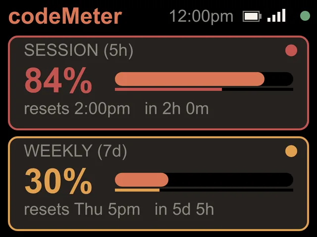

Pace check
How much have I used?
The percent is half the answer. The other half is how much of the week is gone. Try it.


Try it
The pace check.
Enter what Claude shows you. The screen is drawn with the firmware's own rules.
The rule
Budget left against time left.
- On trackThe budget you have left is at least the time left in the window. The number stays white.
- Ahead of paceThe budget left has fallen behind the time left. The number, the time line and the card outline turn amber.
- Over paceMore than 10 points behind. Red. At this rate you will hit the limit before it resets.
- Monthly plansTeam and Enterprise get a forecast instead: On track to use 69%, or Over pace if it passes 100%.
On your desk
Without checking.
codeMeter does this every 60 seconds and shows it beside your keyboard, so the answer is a glance away instead of a tab away.
In use
Glance, don't check.
It sits beside the keyboard, so your limits are a look away while you work.


8 stand colours. Pick one to start your build.
FAQ
Questions.
Why do the colours wait 10 points before going red?
So a freshly reset window does not flash red the moment you start. Amber means a little ahead of the clock; red means clearly overspending.
Does codeMeter tell me how many messages I have left?
No. Claude reports a percent of your limit, so codeMeter shows the percent and your pace against the clock.
Does checking use up my Claude limit?
Each check is one tiny request on Anthropic's cheapest model, once a minute. It is a negligible slice of your allowance.
Does my computer need to stay on?
No. After setup codeMeter runs on its own over Wi-Fi and checks every 60 seconds. Your computer can be off or closed.
myDeskMeter